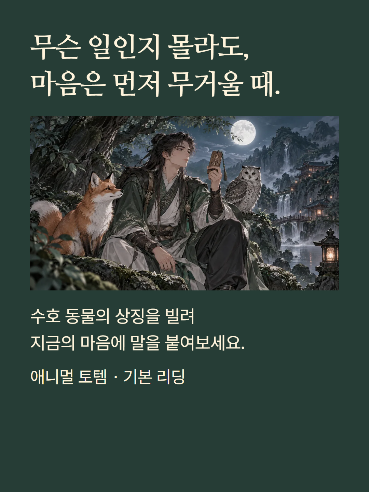
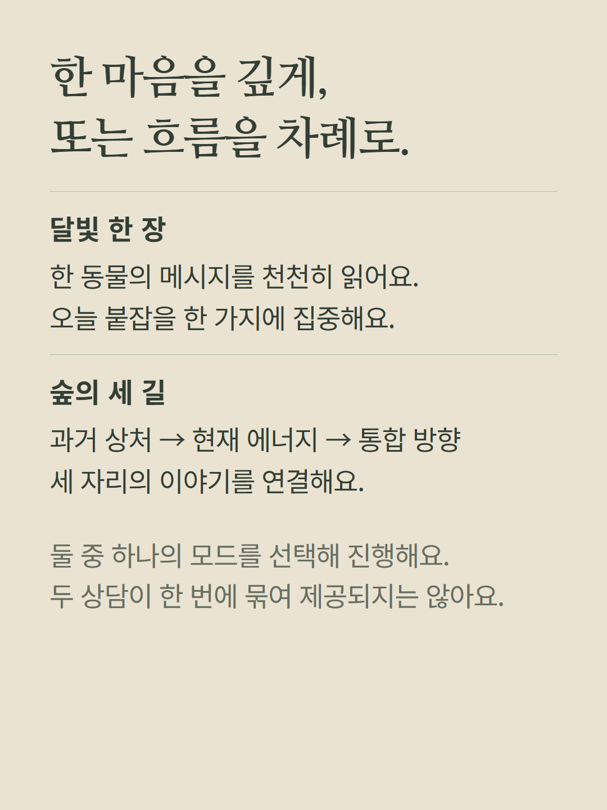
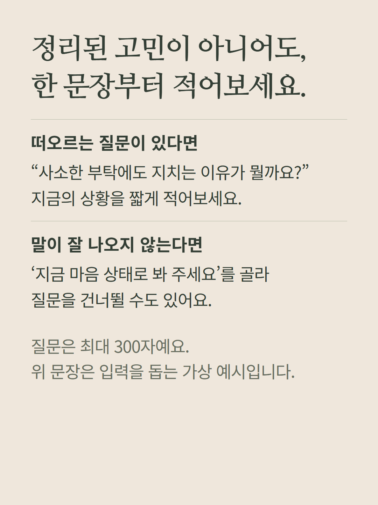
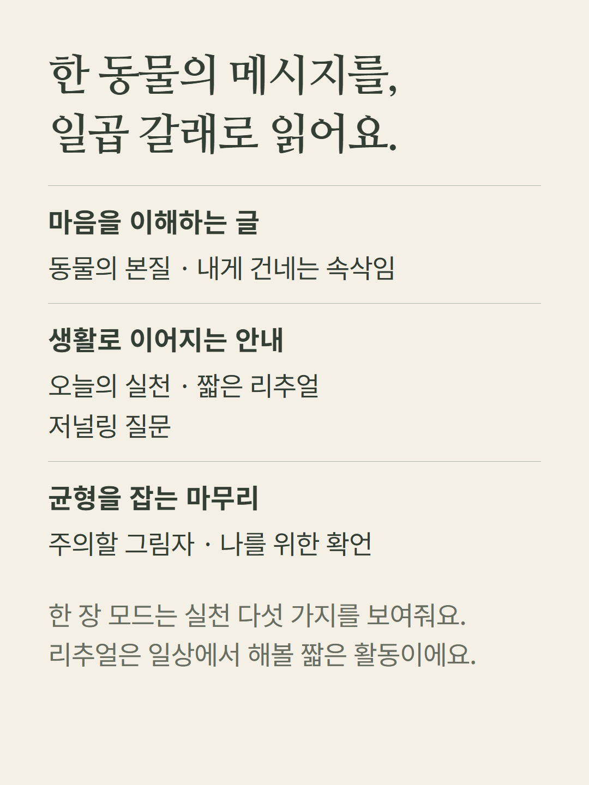
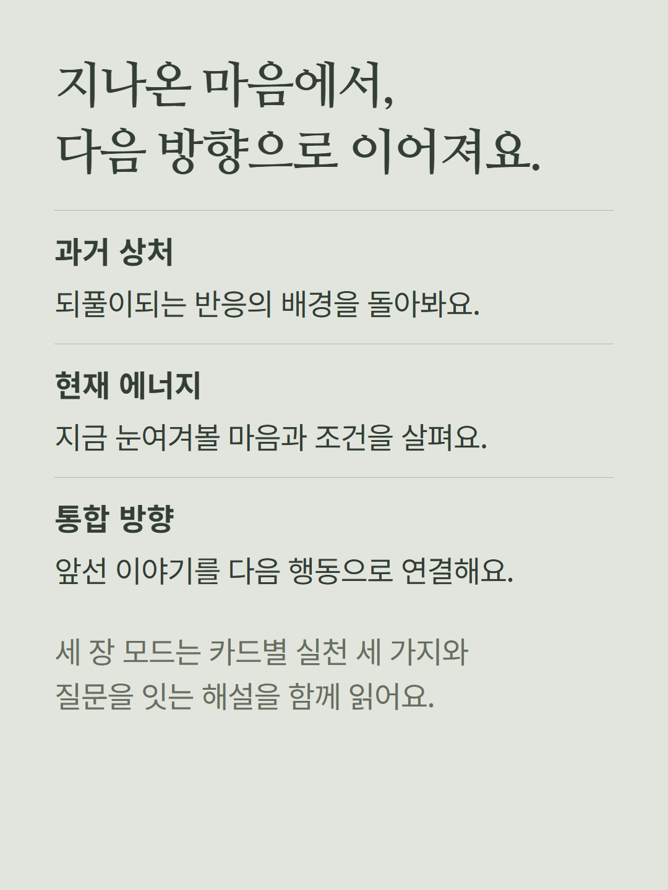
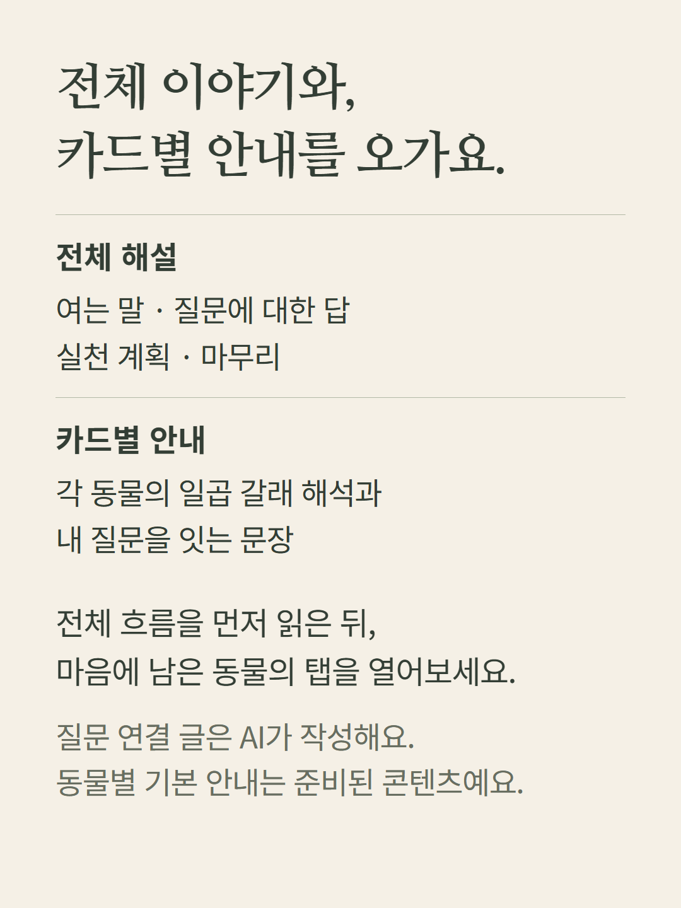
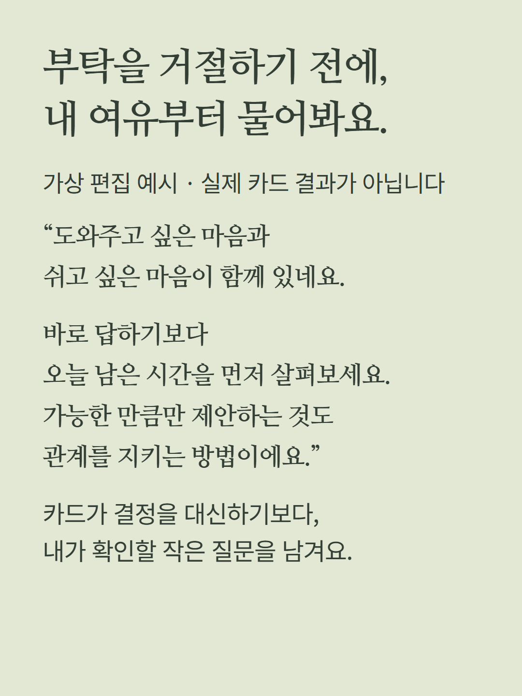
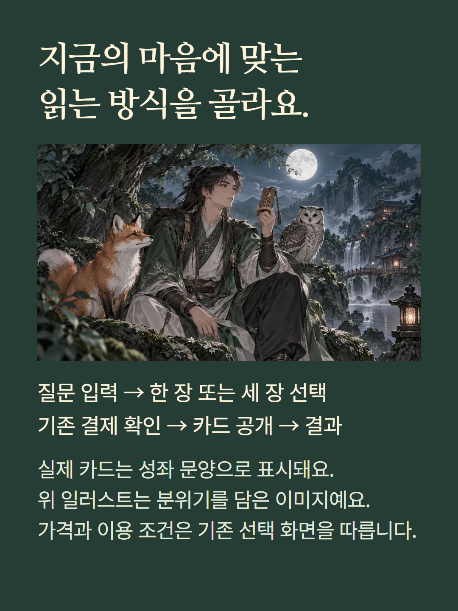

동물 상징 카드로 마음을 돌아보는 콘텐츠입니다. 달빛 한 장과 숲의 세 길은 같은 기본 결제 항목을 쓰는 선택 모드이며, 한 번에 두 모드를 모두 제공한다는 뜻은 아닙니다. 질문은 300자까지 쓰거나 지금 마음 상태로 진행할 수 있습니다. AI의 질문 연결 해설과 동물별 정적 안내가 함께 표시됩니다. 예시는 가상 편집입니다. 일러스트는 분위기 이미지이며 실제 카드는 성좌 문양으로 표시됩니다. 가격과 재이용 조건은 기존 선택·결제 화면을 따릅니다.